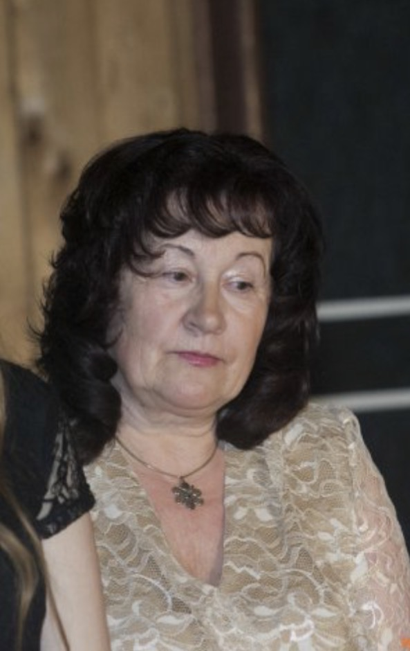

"Man principā bija vienalga, kādu priekšmetu mācīju, bet galvenais, ka fiziku ne."
Intervēja Adrija Veinberga
Kad Jūs sākāt strādāt šajā skolā, un cik gadus šeit nostrādājāt?
Kaut kur ap 2000.gadu, bet es jau sāku, kad tā vēl bija 2.viduskola, un tā jau ir cita vēsture. Sākumā strādāju Laurenču 2.pamatskolā, un tad mani palūdza strādāt 2.vidusskolā, jo tur sākās bilingvālā apmācība. Un kopumā kā skolotāja nostrādāju 44 gadus.
Kādus priekšmetus Jūs mācījāt?
Sākumā mani uzaicināja strādāt par bioloģijas skolotāju, tikai, un tad es visus atlikušos gadus mācīju bioloģiju, ķīmiju un dabaszinātņu kursu. Tie bija mani 3 galvenie priekšmeti.
Kā Jūs raksturotu skolas dzīvi laikā, kad strādājāt?
Ļoti patika. Es vēl 5 gadus nostrādāju vairāk. Man tik ļoti patika, jo visās skolās, kur strādāju, bija ļoti laba vadība. Un mēs kā skolotāji bijām ļoti labās attiecībās ar skolēniem. Mums bija ļoti vienotas klasītes.
Kas skolas dzīve bija agrāk, bet vairāk nav?
Mums skolās bija pašapkalpošanās darbi. Dežuranti, dežūras, pēc stundām jāsakopj kabinets un pat gaiteņi, bet gāja laiks, un tas vairs nebija reāli.
Kādas tradīcijas vai skolas pasākumi Jums īpaši palikuši atmiņā?
Ap 2003. gadu man iedeva audzināšanā 2 klases, 45 audzēkņi, un mēs, šīs divas klases, aizsākām šo tradīciju - Ziemassvētku balles. Un ,protams, ļoti patika žetonu vakari, gadskārtējās ekskursijas un sporta dienas.
Kāpēc Jūs izvēlējāties tieši skolotājas profesiju?
Es beidzu skolu 1960.gadā un iespējamās profesijas bija tādas - skolotāji, ārsti, tiesneši, arhitekti, inženieri. Un liela daļa aizgāja uz skolotājiem. Man principā bija vienalga, kādu priekšmetu mācīju, bet galvenais, ka fiziku ne.
Vai ir kāds notikums, kas lika Jums saprast, ka esat izvēlējusies pareizo profesiju?
Nē, man tāds notikums īsi nav. Bet kopumā ļoti patika strādāt. Viss tas process kopumā.
Kas Jums visvairāk pietrūkst no šī skolotājas darba?
Zini, man nekas nepietrūkt. Es vienkārši gribēju būt brīva. Tā bija ļoti liela slodze.
Ko Jūs novērtējat šajā darbā?
Es vienmēr esmu novērtējusi direktores Balodes darbu. Es varu ļoti priecāties, ka vairākus pēdējos gadus, ko strādāju dabaszinātņu priekšmetos, mums bija skolēni sadalīti pa grupām, lai varētu izpildīt laboratorijas darbus. Un tam bija ļoti liela nozīme.
Ko Jūs novēlētu skolai tās 15 gadu jubilejā?
Izturību, pacietību skolotājiem un sadarbību! Un skolēniem vairāk mācīties!
SĀKUMS